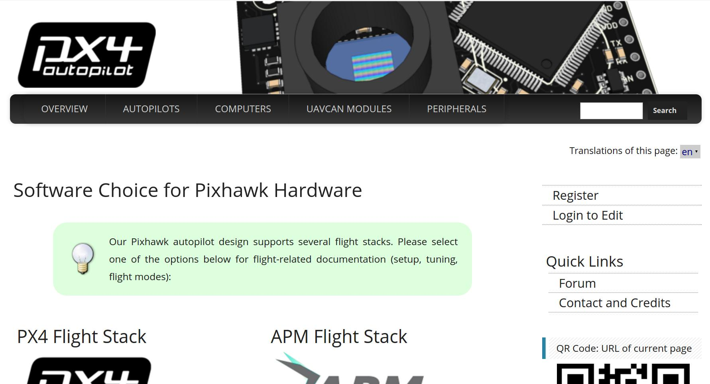
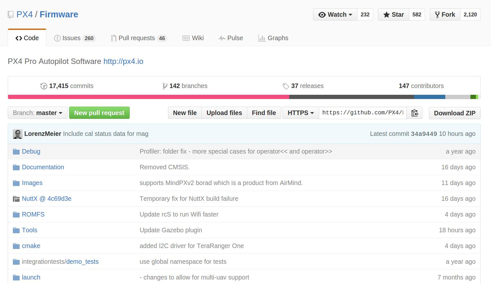
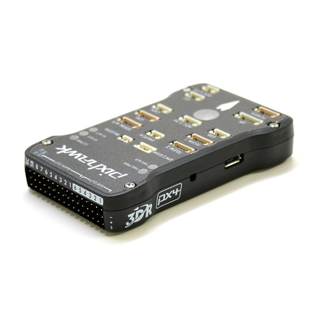
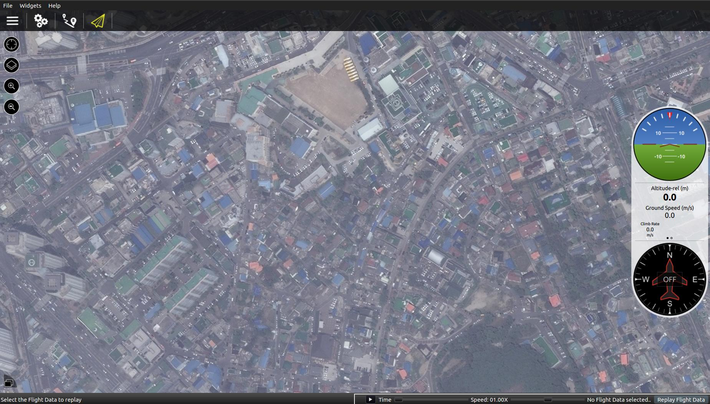
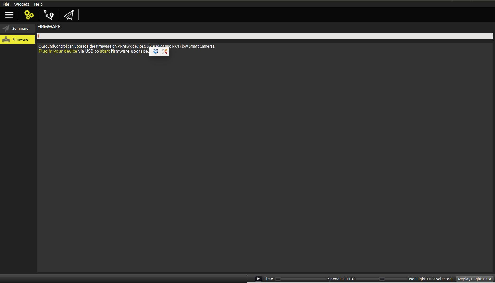
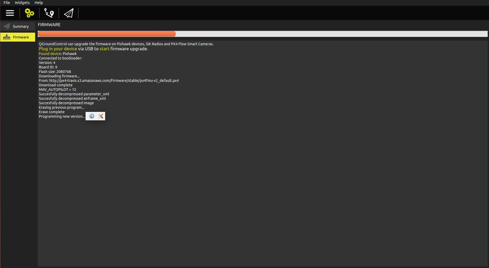
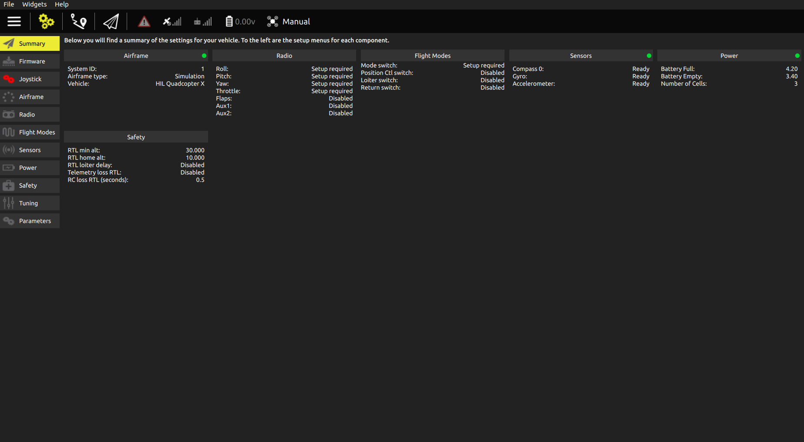
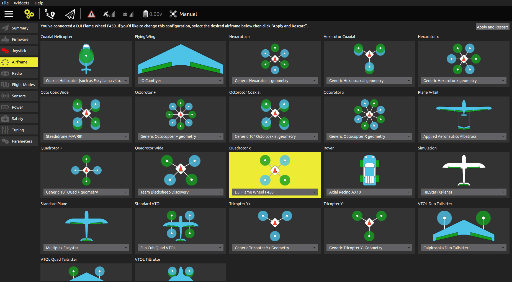
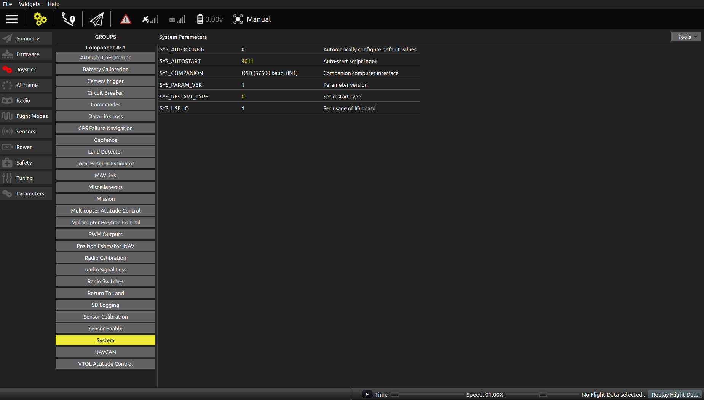

안녕하세요 여러분.. 그 동안 잘 지내셨는지요. Pixhawk에 대해 연재를 해본다고 했는데, 너무 느리게 업데이트를 하고 있어 면목이 없네요 ㅜㅜ 여러분들의 많은 양해 부탁드립니다. 어찌되었든 힘을 내어서 시작해 보겠습니다.
Introduction
앞으로의 연재는 Top-Down방식으로 주로 설명하고자 합니다. 따라서 우선 픽스호크를 가지고 드론을 만들어보는 것 부터 하고자 합니다. 전에도 말씀드렸다시피 저는 컴퓨터 과학이 전공이어서 드론을 잘은 모릅니다. 그래서 이 부분(하드웨어)은 정확하게 설명드리긴 어렵겠지만, 어찌되었든 제가 가지고 있는 경험을 바탕으로 설명드리겠습니다.
자 그럼 시작해보겠습니다.
Pixhawk Eco-System
픽스호크를 사용해 드론을 만들어보기에 앞서, 간단하게나마 픽스호크의 운용 시스템을 알려드리겠습니다. 여기서 말한 운용 시스템이라고 하는 것은 픽스호크에서 제공하는 여러 종류의 사이트 및 프로그램 들이라고 보시면 될 것 같습니다. (구체적인 용어가 생각나지 않아서 운용 시스템이라고 제가 명한겁니다.)
픽스호크에서 제공하는 운용 시스템은 크게 아래와 같이 나누어 볼 수 있을 것 같습니다.
- 문서 시스템
- 코드 관리 시스템
- Q&A를 위한 그룹 시스템
뭐.. 다들 아시겠지만, 조금 거창하게 말씀드리는 것 같네요. 문서 시스템은 처음에는 pixhawk project 라는 사이트에서 시작했습니다. 이 사이트에 가보시면 초기 버전들을 보실 수 있습니다. 여러분 초기 버전이라고 구식이라 생각하지 마시길 바랍니다. 사실 코드에서 초기 버전은 그 프로그램의 처음 철학이 그대로 담겨 있기 마련입니다. 우리도 무슨일을 시작할때 처음에는 어떤 식으로 일을 시작하겠다고 하면서 생각을 정리하고 기본 골격을 잡죠. 하지만 시간이 지나면서 많은 풍파를 만나 처음 생각과는 달리 갈 수도 있지만, 큰 틀에서는 변함이 없도록 하고자 노력합니다. 코드 또한 마찬가지입니다. 처음에는 아직 구체화가 안되어 있고 뼈대만 있다보니,많은 부분이 부족하지만, 쉽게 그 뼈대를 볼 수 있다는 장점이 있습니다. 그래서 저는 주로 처음에 오픈소스를 바라볼때 초기 버전을 살펴봅니다. 왜냐하면 그 버전에는 그 코드의 철학이 담겨 있거든요. 그리고 코드량이 비교적 적기 때문에 눈에도 쉽게 들어오죠. 이런 이유 때문에 초기 버전을 잘 눈여겨 보시길 바랍니다. 초기 버전 개발 사이트에서 픽스호크 코드가 공개되고, 3DR Robotics사에서 제품을 만들면서 2차 개발 사이트인 pixhawk가 탄생합니다. 이 사이트 부터는 뭔가 구체적으로 바뀌지요. 내용도 매우 방대해지구요. 저도 사실 여기서부터 시작을 했습니다.  그런데 이 사이트는 링크를 제대로 해 놓지 않는 경우가 있다는 점을 유의하세요. 그래서 메뉴만 보고 들어가보시면 뭐.. 별거 없네... 라고 생각하실 수 있습니다. 제대로된 사이트맵이 없다는 점이 단점입니다. 그래서 꼭 오른쪽 상단의 search를 사용하세요. 그리고 한가지 더 팁!!! 아래쪽에 보시면 recent change라는게 보입니다. 이거를 잘 사용하시면 변화되고 있는 것을 볼수 있습니다. 어느 정도 이 사이트에 자주 들어오다 보면, 그 다음부터는 변화된 부분만 보면 된다는 거지요... 마치 코드의 업데이트된 부분만 살펴보는 것처럼 말이지요.. 이 사이트 내용은 아직도 어느정도 유효합니다. 필요시 여기에서 많이 찾아보시길 바랍니다. 아. 그리고 여기서 부터는 각각 시스템마다 사이트가 달라집니다. 예를 들면 지상국 시스템인 qgroundcontrol 이라든지, 통신 프로토콜인 mavlink 등등이 따로 떨어져나갔습니다. 여기서는 비행조종컴퓨터인 픽스호크에 국한하여 설명드립니다.
이후 최근에는 devpx4라는 곳으로 바뀝니다. 바뀐지는 얼마 안된걸로 기억됩니다. 아마... 작년 하반기 정도? 이제 본격적으로 development guide라는 사이트로 운용되고, gitbook이라는 시스템으로 동작됩니다. 여기서부터는 사이트 맵이 확실해집니다.저는 그게 가장 좋더라구요. ^^ 어찌되었든 뭔가 체계적으로 변화했습니다. 하지만.. 아직 포팅이 완벽하게 되지 않은 느낌입니다. 참고로 이번 연재에서 설명드릴 드론만들기 정보는 두번째 사이트인 pixhawk에 있는 내용을 가지고 하고자 합니다.
자. 그럼 지금까지 픽스호크 대표 사이트에 대해 설명드렸습니다. 정리하면 세 개의 사이트가 있고, 각각 가지고 있는 정보 및 의미를 말씀드렸으니, 참고하여 잘 사용하시길 바랍니다. 다시 말씀드리지만, 우리는 오픈소스를 가지고 비행조종컴퓨터를 분석하려고 합니다. 따라서 가장 중요한 것은 코드의 철학을 잘 이해하는 것입니다. 왜냐하면 오픈소스이다 보니 소소한 부분은 정~말 많이 바뀝니다. 이거 따라가다 보면 정신없습니다. 중요한 것은 큰 골격, 즉 뼈대를 잘 바라보아야 하고, 그러기 위해서는 이런 사이트들을 잘 보시면서 그런 뼈대를 빨리 잡아가야하는 것입니다. 옛것도 중요하다는 거.. 잊지 말아주세용..
이제 두번째인 코드 관리 시스템입니다. 여러분들도 많이 아시겠지만, 최근 코드 관리, 특히 오픈소스는 github로 몰아가는 것 같습니다. 저도 처음에 오픈소스에 참여하지 않을때는 svn이나 mercury 같은걸 썼는데, github를 알고 나서는 여기에 올빵하고 있습니다. 매우 직관적이고, 잘 만들어져있거든요. 혹시 git 이나 github를 잘 모르시는 분들은 꼭.. 이들을 잘 숙지하시길 바랍니다. 아마 기회 될때 저도 설명하겠지만, 저보다 훨~~씬 잘 설명해주신 분들이 많아서 예습하시고 오시면 더욱 좋을 것 같네요. 어찌되었든... 코드 관리는 px4github에서 관리합니다. 그리고 이중 pixhawk firmware는 https://github.com/PX4/Firmware 사이트에서 관리하오니, 한번 들어가 보시길 간곡히 부탁드립니다.  중요한 것은 픽스호크 코드 관리 시스템에 익숙해지셔야 한다는 것입니다. 이 시스템을 제대로 숙지하지 않으시면 분명 어제까지는 잘 날던 드론이 오늘은 잘 날지 못하는 이상한 현상이 나오게 됩니다. 거짓말 같아 보이시죠? 한번 이런 현상이 닥치면 아.. 그렇구나 하실 겁니다. 꼭 기억하실것은 오픈소스는 하루에도 몇번씩이나 코드가 바뀐다는 것입니다. 현재 내가 사용하는 코드가 언제 개발된 코드인지 확인할려면 꼭 확인해야겠지요? 그리고 이 코드에는 개발자용 버전, 안정된 버전 등등 많은 버전이 존재합니다. 따라서 꼭 확인하고 선택해야 합니다. 이 코드가 그 코드가 아닐 수 있다는 점 꼭 명심하시길 바랍니다. 이 내용에 대해서는 앞으로도 자주 언급될 예정이니 오늘은 여기에서 마치겠습니다.
마지막으로 Q&A를 위한 사이트입니다. 픽스호크를 사용하시다보면 많은 질문들이 있겠지요. 이럴경우 사용하시는 사이트 입니다. 픽스호크에서는 구글 그룹스의 px4users을 사용합니다. 여기에 가보시면 정말 많은 질문들이 있고 개발자들이 정말 빨리 답변을 해줍니다. 물론 해주지 않은 경우도 많이 있지만, 그래도 일단 문제점이 발생하면 여기에 질문을 던져보고 확인해보는게 빠릅니다.
Let's develop drone with Pixhawk
그럼 우선 모든것을 각설하고, 픽스호크를 사용해 드론을 한번 만들어보죠. 앞에서도 말씀드렸지만, 저는 컴퓨터 과학이 전공이어서 하드웨어는 정말 잘 모릅니다. 그래서 제 경험을 바탕으로 설명드릴거구요. 여기에서는 DJI-450을 기준으로 설명드리겠습니다.
자 우선 픽스호크를 다시 한번 보시죠.  픽스호크는 앞면에 DF-13 타입 커넥터가 줄줄이 보이네요. 여기에 통신, GPS, safety button 등등을 꽂아야 합니다. 너무 작고 해서 처음에는 탈부착하기가 정말 힘듭니다. 그리고 여기에서 제공하는 케이블 외에 별도 케이블을 만들어 사용해보면 케이블에 스트레스가 가해지는 경우가 많아서 잘 끊어지기도 합니다. 저는 개인적으로 이런 형태가 픽스호크에서는 가장 맘에 들지 않더군요. 실제 비행시험을 해보면 이 부분 커넥터 연결이 잘 안되는 경우 때문에 시간 소비한 적이 한두번이 아니었습니다. 여러분은 저와 같은 실수를 범하지 않기 위해 왠만하면 정품 케이블을 이용하시고, 이 부분이 사람의 손에 잘 닿지 않는 곳에 놓아주시길 바랍니다. 그리고 왼쪽 옆면에 보면 12345,등 숫자가 적혀있는 부분이 보이실 겁니다. 이 부분은 PWM 신호를 주는 부분이라고 보시면 될 것 같습니다. 모터 신호도 이쪽에서 출력해주고요. RC도 이 부분에 연결합니다. 또 다른 옆면에는 micro USB 연결 부분이 보이네요. 이 부분은 펌웨어를 업데이트하거나, 디버깅할때 주로 사용합니다. 그리고 micro USB 옆에 보면 조그마한 구멍 보이시나요. 이 것은 리셋 버튼입니다. 사용하다가 문제 있으면 리셋하시면 됩니다. 참 그리고 DF13 커넥터 부분에 가운데 쯤에 동그라한 LED 점등 부분이 보이시나요. 이 부분은 상태 정보를 LED로 보여주는 부분인데 처음 보시면 정말 밝아 눈이 나빠질 정도입니다. 랩에서 단순히 시험하실 때에는 저는 여기에 테이프를 붙혀 밝기를 조절하면서 사용한답니다. 참고하시길... 그리고 이보다 더 자세한 것을 알고 싶으신 분은 이곳을 참고하세요. 핀 정보 부터 기타 정보까지 아주 상세하게 나와 있습니다.
그럼 이제 각종 커넥터에 무엇을 꽂아 사용할지 알아보시죠. 다행히도 Jetrho Hazelhurst라는 분이 그림으로 잘 설명해두었더군요.
 이제 어느정도 눈에 들어오시는지요. 이 그림에서 Buzzer라는 게 있는데 상당히 시끄럽습니다. 필요없으시면 굳이 사용하지 않으셔도 됩니다. 그 외 나머지는 꼭 있어야 할 것들만 있어보입니다. 참. 3DR Robotics사에서 통신용으로 별도의 모듈을 팔긴하는데 915 MHz와 433 MHz만 존재합니다. 불행히도 우리나라에서는 둘 다 사용하지 못하니 다른 것을 사용하시길 바랍니다. 기본적으로 시리얼 통신이니 2.4GHz의 지그비를 사용하시는게 좋을 것 같습니다.
이제 어느정도 눈에 들어오시는지요. 이 그림에서 Buzzer라는 게 있는데 상당히 시끄럽습니다. 필요없으시면 굳이 사용하지 않으셔도 됩니다. 그 외 나머지는 꼭 있어야 할 것들만 있어보입니다. 참. 3DR Robotics사에서 통신용으로 별도의 모듈을 팔긴하는데 915 MHz와 433 MHz만 존재합니다. 불행히도 우리나라에서는 둘 다 사용하지 못하니 다른 것을 사용하시길 바랍니다. 기본적으로 시리얼 통신이니 2.4GHz의 지그비를 사용하시는게 좋을 것 같습니다.
연결 부위는 이렇게 하시면 되고, 실제 드론에 탑재하는 방법을 살펴보겠습니다. 이 부분 또한 Pixhawk에서 제공하는 DJI-450을 활용하였습니다. 이 사이트에 가보시면 자세히 설명되어 있으니 참고하셔서 개발하시면 됩니다. 물론 다른 형태의 드론으로도 사용 가능합니다. 참고로 이번 연재에서는 실제 드론을 날려서 하지는 않고, 주로 시뮬레이션에서 동작을 하면서 코드를 분석할려고 합니다. 따라서 준비물은 노트북 그리고 가능하면 pixhawk 하나 정도면 끝입니다.
자 여기까지 잘 따라오셨나요? 이제 비행조종컴퓨터에 펌웨어를 올릴 차례입니다. 펌웨어는 어떻게 올리냐구요? 이번에는 소스코드를 사용하지 않고 단순하게 qgroundcontrol을 사용할려고 합니다. qgroundcontrol은 pixhawk 팀에서 개발한 지상국 시스템으로 QT로 개발되었습니다. 따라서 윈도우/리눅스/맥 OS 등등에서 모두 활용가능합니다. 심지어 안드로이드까지... 우선 저는 리눅스에서 개발을 하니 리눅스 환경을 가정하고 설명드립니다. 다운로드사이트에 가보시면 최신 qgroundcontrol을 받을 수 있습니다. 다운로드된 파일의 압축을 푸시면 하나의 스크립트 파일이 있을 것입니다. 단순하게 이것을 실행하시면 됩니다.
>> ls
Qt flightgear qgroundcontrol qgroundcontrol-start.sh
>> ./qgroundcontrol-start.sh
그럼 이런 화면이 나옵니다.  여기에서 설정 부분 (메뉴 아이콘에서 두번째)을 누르시면 펌웨어 다운로드 부분이 보입니다.  그런 다음 픽스호크를 연결하면 자동으로 펌웨어를 설치합니다. 
여기까지 따라오셨나요? 아마 쉬운 내용이어서 대부분 다들 아실 것 같지만, 처음에도 말씀드렸다시피 본 강좌는 생초보도도 따라올 수 있게 하기 위해서 만들어졌으니 아시는 내용이시면 스킵하셔도 됩니다.
자 여기까지 하셨으면 이제 아마 아래와 같이 여러 메뉴가 나와있을 것 같군요.  아마 여러분들은 Sensors쪽도 빨간색일 것 같습니다. 여기가 빨간색인 것은 센서 보정작업이 안되어 있기 때문입니다. 나중에 보정작업을 해주셔야 합니다. 아마 여러분 눈을 자꾸 거슬리는 빨간불 LED가 깜빡거릴것입니다. 이것은 아직 비행 준비가 안되어 있다는 것을 의미합니다.
이제 비행 기체를 선택해보겠습니다.  저희는 DJI-F450 기체를 사용하니 DJI-F450을 선택하면 되겠지요? 사실 이것을 선택하는 이유는 각 기체마다 PID 게인값이라든지 등등의 특성이 서로 틀리기 때문입니다. 만약 직접 개발한 기체라면 그런 게인들을 직접 찾으셔야겠지요. 그래서 pixhawk에서는 이런 게인값들을 각 기체마다 스크립트 파일로 미리 만들어 놓고 Airframe에서 선택하도록 하는 것입니다. 결국 픽스호크는 파라미터 리스트를 만들어 놓고 이 값들을 조정하여 기체에 특성에 맞도록 하는 것이지요. 아래 그림이 바로 그런 파라미터 값을 직접 손보는 곳입니다.
 아래 보니 System이라는 노란색으로 된 부분에 SYS_AUTOSTART라는게 보이나요? 여기에 4011로 적혀있군요. 4011이 나타내는 게 바로 DJI-F450이라는 것입니다. 실제 4011 스크립트에 적혀있는 것을 보면 아래와 같습니다.
#!nsh
#
# @name DJI Flame Wheel F450
#
# @type Quadrotor x
#
# @output AUX1 feed-through of RC AUX1 channel
# @output AUX2 feed-through of RC AUX2 channel
# @output AUX3 feed-through of RC AUX3 channel
#
# @maintainer Lorenz Meier <lorenz@px4.io>
#
sh /etc/init.d/4001_quad_x
if [ $AUTOCNF == yes ]
then
param set MC_ROLL_P 7.0
param set MC_ROLLRATE_P 0.15
param set MC_ROLLRATE_I 0.05
param set MC_ROLLRATE_D 0.003
param set MC_PITCH_P 7.0
param set MC_PITCHRATE_P 0.15
param set MC_PITCHRATE_I 0.05
param set MC_PITCHRATE_D 0.003
param set MC_YAW_P 2.8
param set MC_YAWRATE_P 0.3
param set MC_YAWRATE_I 0.1
param set MC_YAWRATE_D 0.0
# DJI ESCs do not support calibration and need a higher min
param set PWM_MIN 1230
fi
결국은 스크립트이다~ 라는것입니다.
여기까지 하셨으면 앞에서 말씀드린 센서 보정을 하시고, RC 설정하시면 끝입니다. 물론 베터리 셀 갯수 등 설정하는것도 잘 맞추어야 하구요.
그런 다음 천천히 한번 날려보시면 될 것 같습니다. 처음에는 프로펠러 없이 RC로 roll/pitch/yaw를 체크해보시길 바랍니다. 프로펠러도 없이 어떻게 하냐구요? 전문가분들이 하시는 거 보니깐, 테이프를 모터에다가 붙이시고, 돌려봐서 RPM 변화량을 보시더군요. 한번 해보시길 권장합니다.
글을 쓰다보니 실제 드론 만드는 사진은 전혀없네요.ㅜㅜ 제목을 잘못 정한 듯.. 하지만, 제가 말씀드리고자 했던 부분은 어느정도 한것 같습니다. 많은 이해 부탁드립니다.
Epilogue
최근 많은 분들이 제가 쓴 글을 보시고 문의도 해주시고, 응원도 해주셔서 개인적으로 너무 감사드리고 있습니다. 한분한분 정성껏 답변을 다 못해드려 죄송하구요. 아무쪼록 조금이나마 도움이 되드리기 위해 열심히 작성해 보겠습니다.
업데이트 속도가 늦더라도 이해해 주시길 바랍니다. (생업이 바빠서.. ㅠㅠ)